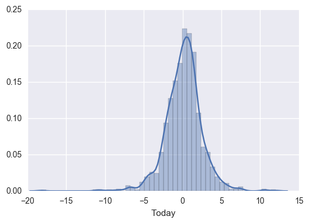
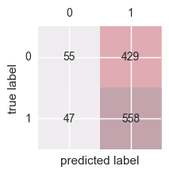

Exercise 4.10
import pandas as pd
import numpy as np
import matplotlib.pyplot as plt
import seaborn as sns #visualization library
from sklearn.linear_model import LogisticRegression #problem will be solved with scikit
from sklearn.metrics import accuracy_score
from sklearn.discriminant_analysis import LinearDiscriminantAnalysis #linear discriminant analysis
from sklearn.discriminant_analysis import QuadraticDiscriminantAnalysis #quadratic discriminant analysis
from sklearn.neighbors import KNeighborsClassifier #K nearest neighbours (KNN)
import statsmodels.api as sm #to compute p-values
from patsy import dmatrices
%matplotlib inline
df = pd.read_csv('../data/Weekly.csv',index_col=0)
df.head()
| Year | Lag1 | Lag2 | Lag3 | Lag4 | Lag5 | Volume | Today | Direction | |
|---|---|---|---|---|---|---|---|---|---|
| 1 | 1990 | 0.816 | 1.572 | -3.936 | -0.229 | -3.484 | 0.154976 | -0.270 | Down |
| 2 | 1990 | -0.270 | 0.816 | 1.572 | -3.936 | -0.229 | 0.148574 | -2.576 | Down |
| 3 | 1990 | -2.576 | -0.270 | 0.816 | 1.572 | -3.936 | 0.159837 | 3.514 | Up |
| 4 | 1990 | 3.514 | -2.576 | -0.270 | 0.816 | 1.572 | 0.161630 | 0.712 | Up |
| 5 | 1990 | 0.712 | 3.514 | -2.576 | -0.270 | 0.816 | 0.153728 | 1.178 | Up |
(a)
df.describe() #descriptive statistics
| Year | Lag1 | Lag2 | Lag3 | Lag4 | Lag5 | Volume | Today | |
|---|---|---|---|---|---|---|---|---|
| count | 1089.000000 | 1089.000000 | 1089.000000 | 1089.000000 | 1089.000000 | 1089.000000 | 1089.000000 | 1089.000000 |
| mean | 2000.048669 | 0.150585 | 0.151079 | 0.147205 | 0.145818 | 0.139893 | 1.574618 | 0.149899 |
| std | 6.033182 | 2.357013 | 2.357254 | 2.360502 | 2.360279 | 2.361285 | 1.686636 | 2.356927 |
| min | 1990.000000 | -18.195000 | -18.195000 | -18.195000 | -18.195000 | -18.195000 | 0.087465 | -18.195000 |
| 25% | 1995.000000 | -1.154000 | -1.154000 | -1.158000 | -1.158000 | -1.166000 | 0.332022 | -1.154000 |
| 50% | 2000.000000 | 0.241000 | 0.241000 | 0.241000 | 0.238000 | 0.234000 | 1.002680 | 0.241000 |
| 75% | 2005.000000 | 1.405000 | 1.409000 | 1.409000 | 1.409000 | 1.405000 | 2.053727 | 1.405000 |
| max | 2010.000000 | 12.026000 | 12.026000 | 12.026000 | 12.026000 | 12.026000 | 9.328214 | 12.026000 |
df.corr() #correlation matrix
| Year | Lag1 | Lag2 | Lag3 | Lag4 | Lag5 | Volume | Today | |
|---|---|---|---|---|---|---|---|---|
| Year | 1.000000 | -0.032289 | -0.033390 | -0.030006 | -0.031128 | -0.030519 | 0.841942 | -0.032460 |
| Lag1 | -0.032289 | 1.000000 | -0.074853 | 0.058636 | -0.071274 | -0.008183 | -0.064951 | -0.075032 |
| Lag2 | -0.033390 | -0.074853 | 1.000000 | -0.075721 | 0.058382 | -0.072499 | -0.085513 | 0.059167 |
| Lag3 | -0.030006 | 0.058636 | -0.075721 | 1.000000 | -0.075396 | 0.060657 | -0.069288 | -0.071244 |
| Lag4 | -0.031128 | -0.071274 | 0.058382 | -0.075396 | 1.000000 | -0.075675 | -0.061075 | -0.007826 |
| Lag5 | -0.030519 | -0.008183 | -0.072499 | 0.060657 | -0.075675 | 1.000000 | -0.058517 | 0.011013 |
| Volume | 0.841942 | -0.064951 | -0.085513 | -0.069288 | -0.061075 | -0.058517 | 1.000000 | -0.033078 |
| Today | -0.032460 | -0.075032 | 0.059167 | -0.071244 | -0.007826 | 0.011013 | -0.033078 | 1.000000 |
- Relationship Year/Volume should be explored
sns.distplot(df['Today']);
C:\Program Files\Anaconda3\lib\site-packages\statsmodels\nonparametric\kdetools.py:20: VisibleDeprecationWarning: using a non-integer number instead of an integer will result in an error in the future
y = X[:m/2+1] + np.r_[0,X[m/2+1:],0]*1j

sns.boxplot(x='Direction', y='Volume', data=df);

sns.pairplot(df);

plt.scatter(df['Year'],df['Volume']);

- The Year/Volume relationship is the only one with a visible pattern
(b)
#logistic regression model
train_cols = ['Lag1','Lag2','Lag3','Lag4','Lag5','Volume'] #independent var. considered in the logistic model
lr = LogisticRegression()
mod = lr.fit(df[train_cols], df['Direction'])
mod.coef_ #independent var. coefficients
array([[-0.04117292, 0.05846974, -0.01599122, -0.02769998, -0.01440289,
-0.02212844]])
mod.intercept_ #interception
array([ 0.26484745])
#p-values determine if the predictors appear to be statistically significant
#it's easier to get p-values with statsmodel
#we need to transform the target value to non-categorical
#if we don't do this, statsmodel will try to use dummy variables
#dummy variables don't work here because they will create a target value with 2 columns
df['Direction'] = df['Direction'].map({'Down':0, 'Up':1})
#fit model
y, X = dmatrices('Direction ~ Lag1 + Lag2 + Lag3 + Lag4 + Lag5 + Volume', data=df, return_type='dataframe')
#logit = sm.Logit(y.ix[:,0], X) #
logit = sm.Logit(y, X)
result = logit.fit()
Optimization terminated successfully.
Current function value: 0.682441
Iterations 4
print(result.summary())
Logit Regression Results
==============================================================================
Dep. Variable: Direction No. Observations: 1089
Model: Logit Df Residuals: 1082
Method: MLE Df Model: 6
Date: Fri, 27 Jan 2017 Pseudo R-squ.: 0.006580
Time: 05:36:33 Log-Likelihood: -743.18
converged: True LL-Null: -748.10
LLR p-value: 0.1313
==============================================================================
coef std err z P>|z| [95.0% Conf. Int.]
------------------------------------------------------------------------------
Intercept 0.2669 0.086 3.106 0.002 0.098 0.435
Lag1 -0.0413 0.026 -1.563 0.118 -0.093 0.010
Lag2 0.0584 0.027 2.175 0.030 0.006 0.111
Lag3 -0.0161 0.027 -0.602 0.547 -0.068 0.036
Lag4 -0.0278 0.026 -1.050 0.294 -0.080 0.024
Lag5 -0.0145 0.026 -0.549 0.583 -0.066 0.037
Volume -0.0227 0.037 -0.616 0.538 -0.095 0.050
==============================================================================
Lag2 seems to be a predictor with statistical significance. We can say that because Lag2 has a small P|z|, meaning that there's a small probability that Lag2 coefficient is equal to zero.
Note: Notice that the coefficients are not exactly the same. That happens because scikit-learn applies some kind of parameter regularization. You can confirm this by reading the scikit-learn documentation, as suggested here: http://stats.stackexchange.com/questions/203740/logistic-regression-scikit-learn-vs-statsmodels. An option to overcome this is to for LogisticRegression to use a big C value (e.g. 1e9).
(c)
#confusion matrix
conf_mat = confusion_matrix(df['Direction'], lr.predict(df[train_cols]))
print(conf_mat) #alternative to 'fancy' plot
[[ 55 429]
[ 47 558]]
#'fancy' confusion matrix plot
#based on: Raschka (2014)
fig, ax = plt.subplots(figsize=(2, 2))
ax.matshow(conf_mat, cmap=plt.cm.Reds, alpha=0.3)
for i in range(conf_mat.shape[0]):
for j in range(conf_mat.shape[1]):
ax.text(x=j, y=i,
s=conf_mat[i, j],
va='center', ha='center')
plt.xlabel('predicted label')
plt.ylabel('true label')
plt.show()

- The confusion matrix gives us two types of mistakes: 1) false positives; 2) false negatives.
- A false positive occurs when our prediction gives us a positive value but the real value is negative. A false negative occurs when our prediction gives us a negative value but the real value is positive.
- Assuming that class 1 ('Up') is the positive class, our model correctly classified 55 samples that belong to class 0 (true negatives) and 558 samples that belong to class 1 (true positives). However, our model also incorrectly misclassified 429 samples from class 0 to class 1 (false negatives), and it predicted that 47 samples were 'Up' although they were 'Down' (false positives).
Note: 'Down' is class 0 because it is the first 'Direction' class in the dataset. When encoding the categorical variable, scikit will automatically attribute the value 0 to the first class it gets, value 1 to the second class it gets and so one.
#overall fraction of correct predictions
lr.score(df[train_cols],df['Direction'])
0.56290174471992649
(d)
#partitioning the dataset
df_9908 = df[(df['Year'] >=1990) & (df['Year'] <=2008)]
df_0910 = df[(df['Year'] >=2009) & (df['Year'] <=2010)]
#to avoid 'ValueError: Found arrays with inconsistent numbers of sample'
#shape must be (X,1) and not (X,)
X = df_9908['Lag2']
X = X.reshape(np.shape(X)[0],1)
#logistic regression
mod = lr.fit(X,df_9908['Direction']) #regression object already exists; just need to fit it to the new data
#confusion matrix
X = df_0910['Lag2']
X = X.reshape(np.shape(X)[0],1)
conf_mat = confusion_matrix(df_0910['Direction'], lr.predict(X))
print(conf_mat)
[[ 9 34]
[ 5 56]]
#overall fraction of correct predictions
lr.score(X, df_0910['Direction'])
0.625
(e)
#getting data ready
X = df_9908['Lag2']
X = X.reshape(np.shape(X)[0],1)
#linear discriminant analysis (LDA)
lda = LinearDiscriminantAnalysis()
lda.fit(X,df_9908['Direction'])
LinearDiscriminantAnalysis(n_components=None, priors=None, shrinkage=None,
solver='svd', store_covariance=False, tol=0.0001)
#getting data ready
X = df_0910['Lag2']
X = X.reshape(np.shape(X)[0],1)
#confusion matrix
conf_mat = confusion_matrix(df_0910['Direction'], lda.predict(X))
print(conf_mat)
[[ 9 34]
[ 5 56]]
#overall fraction of correct predictions
#it will be helpful for the next question
lda.score(X, df_0910['Direction'])
0.625
(f)
#getting data ready
X = df_9908['Lag2']
X = X.reshape(np.shape(X)[0],1)
#quadratic discriminant analysis (QDA)
qda = QuadraticDiscriminantAnalysis()
qda.fit(X,df_9908['Direction'])
QuadraticDiscriminantAnalysis(priors=None, reg_param=0.0,
store_covariances=False, tol=0.0001)
#getting data ready
X = df_0910['Lag2']
X = X.reshape(np.shape(X)[0],1)
#confusion matrix
conf_mat = confusion_matrix(df_0910['Direction'], qda.predict(X))
print(conf_mat)
[[ 0 43]
[ 0 61]]
#overall fraction of correct predictions
#it will be helpful for the next question
qda.score(X, df_0910['Direction'])
0.58653846153846156
(g)
#getting data ready
X = df_9908['Lag2']
X = X.reshape(np.shape(X)[0],1)
#creating an instance of Neighbours Classifier and fitting the data
nbrs = KNeighborsClassifier(n_neighbors=1)
nbrs.fit(X,df_9908['Direction'])
KNeighborsClassifier(algorithm='auto', leaf_size=30, metric='minkowski',
metric_params=None, n_jobs=1, n_neighbors=1, p=2,
weights='uniform')
#getting data ready
X = df_0910['Lag2']
X = X.reshape(np.shape(X)[0],1)
#confusion matrix
conf_mat = confusion_matrix(df_0910['Direction'], nbrs.predict(X))
print(conf_mat)
[[21 22]
[31 30]]
#overall fraction of correct predictions
#it will be helpful for the next question
nbrs.score(X, df_0910['Direction'])
0.49038461538461536
(h)
The methods that appear to provide the best results are the logistic regression and the linear discriminant analysis (LDA). They are the methods where score (overall fraction of correct predictions) is higher (0.625 vs 0.587 vs 0.490)
(i)
#trying with a different number of neighbors
n_nbrs = 10
#getting data ready for the neigb
X = df_9908['Lag2']
X = X.reshape(np.shape(X)[0],1)
#creating an instance of Neighbours Classifier and fitting the data
nbrs = KNeighborsClassifier(n_neighbors=n_nbrs)
nbrs.fit(X,df_9908['Direction'])
#getting data ready for the confusion matrix
X = df_0910['Lag2']
X = X.reshape(np.shape(X)[0],1)
#confusion matrix
conf_mat = confusion_matrix(df_0910['Direction'], nbrs.predict(X))
print(conf_mat)
[[22 21]
[24 37]]
Now, it's time to play a little bit with models. We leave this entertaining task to the reader, as homework.
References
- Raschka, S., 2014, Python Machine Learning